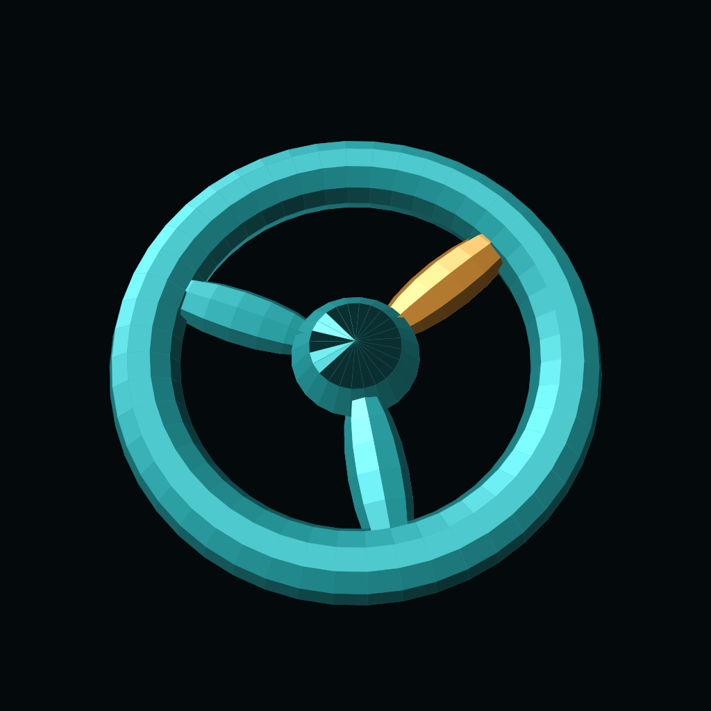

01 / WRITE
森のメモ帳
昔のWindowsで作ったテキストファイルも。文字コードを選んで開き、自分の好きな場所へ保存する、シンプルなメモ帳。
- iPhone · iPad公開中
- Mac審査中
¥300 · 買い切り（日本）
広告なし。アプリ内課金なし。
公開・審査状況の確認日：2026年9月28日（日本時間）
THE COLLECTION
01 / WRITE
昔のWindowsで作ったテキストファイルも。文字コードを選んで開き、自分の好きな場所へ保存する、シンプルなメモ帳。
¥300 · 買い切り（日本）
02 / CHOOSE
4枚から、なんとなく1枚。選ぶとすべてのカードが開く、テンポのよい4択ゲーム。能力判定も、占いもありません。
無料
03 / OBSERVE
テレビの中に、小さな森を。鳥が枝を渡り、魚が水面を跳ねる。何かを達成しなくてもいい、静かな観測の時間。
無料
04 / ARRANGE
魚、水草、小さな海老。好きなものを選んで置き、自分だけの水景を眺める。明るい水景も、落ち着いた水景も。
予定価格 ¥300 · 買い切り（日本）
まだダウンロードできません。審査通過後に公開予定です。

05 / SPIN
手首の上の、小さなデジタル玩具。指で払うと回り、逆向きになぞるとブレーキ。意味もなく触って楽しむ車輪。
無料予定
まだダウンロードできません。
画像はアプリアイコンまたは紹介用アートです。公開状況は上記確認日時点・日本のストアを基準としています。価格や対応端末の最新情報はApp Storeでご確認ください。
SUPPORT & PRIVACY
お問い合わせとプライバシーポリシーは各アプリの紹介ページに掲載しています。
FOREST NOTEPAD / PRIVACY
既存のアプリ内リンクのため、この場所にも森のメモ帳のポリシーを掲載しています。他のアプリは上の紹介ページをご覧ください。